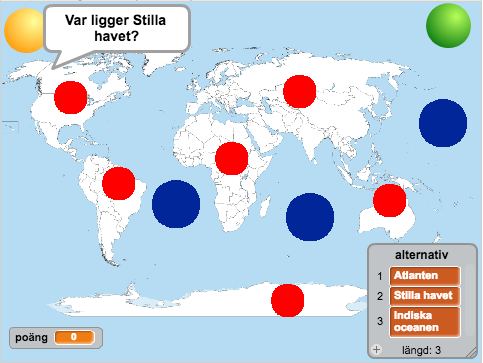
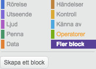
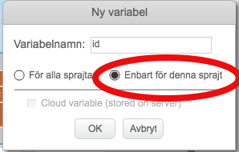

Hav och kontinenter
I denna uppgift skall du få skapa en prototyp till ett frågespel. Först skall du få koda ett spel som går ut på att gissa var olika hav ligger. Därefter kommer du att få utöka programmet med frågor om var olika kontinenter ligger. I uppgiften kommer du få använda dig av många funktioner och sprajtar.

Ett exempel på hur spelet kan se ut ser du här:
Delmoment 1: Bakgrund och några sprajtar
Skapa ett nytt projekt och ta bort katten.
Som bakgrund behöver du en världskarta. En sådan kan du hitta genom att googla eller så kan du välja en från Wikimedia. Spara bilden på din dator och ladda upp den som bakgrund i ditt Scratch projekt.
Nu behöver du en sprajt som skall styra spela. Du kan till exempel använda dig av Sport/Ball. Sätt den i ett hörn av spelplanen.
Rita en ny sprajt och gör den till en ganska liten cirkel. Det är denna sprajt som du skall klicka på för att gissa på olika hav. Dra sprajten så att den ligger i ”Indiska oceanen” på kartan.
Skapa en variabel för alla sprajter som heter ”poäng”
Skapa en lista för all sprajter som heter ”alternativ”

Ett exempel på hur spelet kan se ut nu.
Skapa ett skript för sprajten Ball som säger:
Skapa ett till skript för samma sprajt
Startar när den tar emot meddelandet ”starta nytt havsspel”
Sätt "poäng" till 0
Ta bort allt i listan ”alternativ”
Sätt in ”Atlanten” sist i "alternativ"
Sätt in ”Stilla havet” sist i "alternativ"
Sätt in ”Indiska oceanen” sist i "alternativ"

Det här är några av de block du behöver för punkt 8.
Testa spelet! Läggs det till olika hav i listan när du klickar på sprajten?
Skapa en variabel som heter ”rätt svar”. Den skall inte visas på skärmen.

Här hittar du knappen för att skapa ett nytt block.
Skapa ett nytt block som heter ”fråga”, och som gör följande. (Du kan skapa nya block under Fler block)
Se till att blocket ”fråga” körs när sprajten Ball tar emot meddelandet ”starta nytt havsspel”. Du kan lägga in blocket efter koden du skapade ovan i punkt 8.

Det här är några av de block du behöver för punkt 2.
Delmoment 2: Hav-prickar!
Nu skall du göra så att du eller någon annan kan gissa på olika hav genom att klicka på hav-prickar. Du skapade en sådan sprajt ovan och det skall bli enkelt att skapa fler sådana prickar utan för mycket kod.
Skapa en variabel för alla sprajter som heter ”svar”. Den skall inte visas på skärmen.
Skapa ett skript i sprajten Sprite1 som säger
Startar när den klickas på
Sätt "svar” till 3
Skickar meddelandet ”rätta hav”
Säg objekt 3 i ”alternativ” i 2 sekunder.

Det här är några av de block du behöver för punkt 2.
Du använder dig av 3 här eftersom pricken är placerad i Indiska oceanen och det är den plats i listan som just det här havet har. Det är i allmänhet inte bra att använda sig av siffror på det här sättet. Till exempel behöver du byta ut 3:an på flera ställen om du kopierar sprajten och placerar den på ett annat hav. Därför skall du ersätta 3:an med en lokal variabel som bara finns för denna sprajt.

Skapa en variabel för Sprajt1 som heter ”id”. Var noga med att skapa denna variabel enbart för denna sprajt.
Skapa ett skript för Sprajt1 som säger:
Ändra i det skriptet som du skapade i punkt 2 ovan så att 3:an byts ut mot variabeln ”id”.
 INTE
INTE 
Nu kan du skapa fler prickar!
Kopiera Sprajt1 och placera kopian på Atlanten i kartan.
Ändra skriptet som sätter ”id” så att värdet i stället blir 1.
Repetera punkterna 6 och 7 men placera den tredje pricken i Stilla havet och sätt ”id” till 2.
Vad händer nu om du klickar på de olika prickarna? Visar de rätt namn?
Delmoment 3: Rätta gissningen
Nu fattas bara att du kontrollerar så att spelaren klickar på rätt prick.
Skapa ett skript i Ball som säger
Startar när den tar emot meddelandet ”rätta hav”
Om "svar" = "rätt svar" då:
Öka "poäng" med 1
fråga (det här blocket skapade du tidigare)
Annars:
Tänk ”Hmm…” i 2 sekunder
Skicka meddelandet ”starta nytt havsspel”
Nu skall du ha en första fungerande version av spelet. Testa! Ökar poängen om du gissar på rätt hav? Nollställs poängen om du gissar fel?
Lägg till ny kod efter att du ändrat poäng med 1:
Nu har du lagt till en liten färganimation som visas om du gissar rätt.

Det här är några av de block du behöver för punkterna ovan.
Delmoment 4: Kontinenter
Nu skall du få utöka programmet med ett spel som går ut på att gissa kontinenter.
Kopiera sprajten Ball och placera den i ett annat hörn. Du kan också välja en annan klädsel för den nya sprajten så att den ser annorlunda ut.
Ändra i den nya sprajten Ball2 så att den skickar meddelandet ”starta nytt kontinentspel” i stället för ”starta nytt havsspel” när den klickas på.
Ändra också på andra stället så att den kör kod när den tar emot ”starta nytt kontinentspel”.
Ta bort insättningarna av haven i listan och sätt istället in dessa 6 kontinenter
Afrika
Eurasien
Nordamerika
Sydamerika
Australien
Antarktis
Ändra så att den kör kod för att rätta spelet när den tar emot meddelandet ”rätta kontinent” istället för ”rätta hav”.
Nu skall bollen fungera. Vad händer om du klickar på den? Frågar den efter en kontinent?
 INTE
INTE 
Nästa steg är att lägga till prickar för de olika kontinenterna.
Kopiera en av hav-prickarna. Rita om klädseln så att den har en annan färg.
Ändra ”rätta hav” till ”rätta kontinent” så att rätt meddelandet skickas
Kopiera denna prick 5 gånger och placera ut dem på de olika kontinenterna
Ändra i skripten för de olika prickarna så att den lokala variabeln ”id” sätts till rätt siffra.
Färdig!
Grattis, nu har du gjort klart uppgiften.
Glöm inte att spara ditt projekt! Döp det gärna till uppgiftens namn så att du enkelt kan hitta den igen.
Testa ditt projekt
Visa gärna någon det som du har gjort och låt dem testa. Tryck på DELA för att andra ska kunna hitta spelet på Scratch. Gå ut till projektsidan och låt någon annan testa spelet!
Utmaningar
Det är väldigt många prickar på spelplanen. Det vore bra om hav-prickarna försvinner när du gissar på kontinent och att kontinent-prickarna försvinner när du gissar på hav. Kan du fixa det?
Lägg till ett nytt spel! Du kan till exempel lägga till ett spel går ut på att gissa länder.
Frågeställningar
- Vad är en lokal variabel?
- Varför kan det vara bara att skapa ett nytt block?